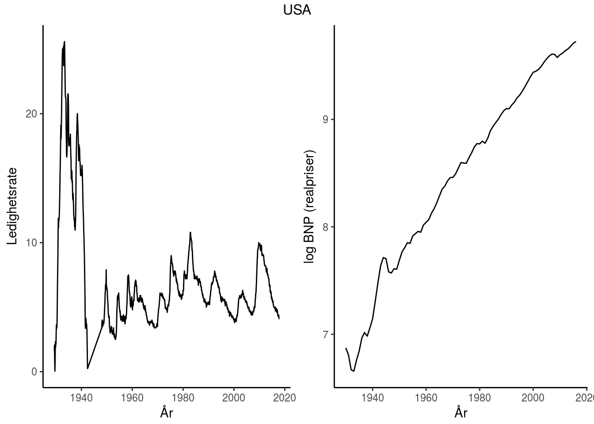
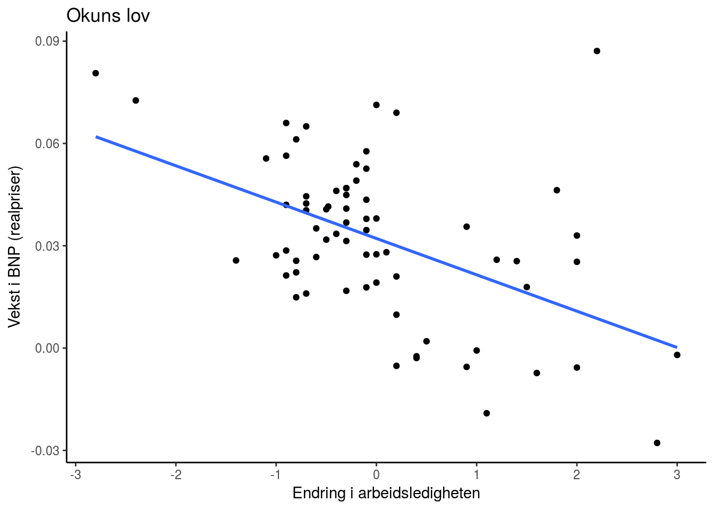

| Økonom | Konjunktursvingninger | Stabiliseringspolitikk | Krisepolitikk |
|---|---|---|---|
| Keynes/Krugman | Investeringer (‘animal spirit’) | Finanspolitikk | Ekspansiv finans- og pengepolitikk |
| Friedman | Endringer i pengemengden | Konstant pengemengdevekst | Ekspaniv pengepolitikk |
| Minsky | Økonmisk stabilitiet fører til ustabilitet | Finansreguleringer og sentralbank | Bail-out |
| Hayek | Kredittvekst | Fri konkurrane i banksektoren (ingen sentralbank) | Likvididering (bail-in) |
Innholdsfortegnelse
- Introduksjon
- Del 1: Kortsiktige konjunktursvingninger
- Del 2: Økonomisk vekst
- Del 3: Økonomiske kriser
- Case-studie: Krisen i Eurosonen:
- Referanser
Introduksjon
Tre hovedtemaer:
- Svingninger (del I)
- Økonomisk vekst (del II)
- Økonomiske kriser (del III)
USA fra 1929-2017

USA fra den 2. verdenskrig og til den store resesjonsen (1946-2007)

USA under dene store depresjonen (1929-1939) og resesjonen (2007-2012)

Tre grunnleggende spørsmål forsøkt besvart
Hva forårsaker - konjunktursvingninger? - økonomisk vekst? - økonomiske kriser?
Hvilken rolle bør offentlige myndigheter spille?
- Stabiliseringspolitikk (aktiv/passiv)
- Vekstpolitikk (kapitalisme/offentlig sektor)
- Økonomiske kriser (stabiliserende/likvidierende)
Kjente makroøkonomer


Politikkanbefalinger
Abstraksjon
Entia non sunt multiplicanda praeter necessitatem (More things should not be used than are necessary).
Prinsippet slår fast at man skal ikke anta flere foreteelser eller ting enn hva som trengs for å forklare de observasjoner man gjør
- Bruker mattematikk
Sentrale aktører i makroøkonomien
Husholdninger (del I, del II og del III)
Konsumerer og sparer
Bedrifter (del I, del II og del III)
Produserer og investerer
Banker og fininstitusjoner (del III)
Sentralbanken (del I og III)
Setter rentenivå
Offentlig myndigheter (del I og III)
Finanspolitikk
Markedene vi studerer
Godemarkedet (varer og tjenester) - del I, del II og del III
Pengemarkedet - del I, del III
Arbeidsmarkedet - del I, del III
Finansmarkeder (kapital- og lånemarkedet) - del II, III
Valutakursmarkedet - del I
Størrelsen på en økonomi
Lukket (global økonomi) økonomi
Påvirkes ikke av omverden Tilnærming: USA
Liten åpen økonomi
Påvirkes av, men påvirker ikke selv, omverden Tilnærming: Norge
Del 1: Kortsiktige konjunktursvingninger


Long run is a misleading guide to current affairs. In the long run we are all dead. - Keynes
Grunnleggende bakgrunnkunnskap
Sentrale begreper
- BNP
- Ledighet
- Inflasjon
Sentral empiriske resultater
- Okuns lov
- Phillips-kurven
Hva bestemmer aggregert BNP?
Kort sikt:
Mellomlang sikt:
Lang sikt:
Enkel Keynes-modell: likevekt i godemarkedet (varer og tjenester)
IS-LM modellen: likevekt i gode- og pengemarkedet
AD-AS modellen: likevekt i gode-, penge- og arbeidsmarkedet
Åpen Økonomi
Mundell-Flemming modellen (IS-LM for en åpen økonomi): likevekt i gode, penge- og valutakursmarkedet
AD-AS: likevekt i gode, penge, valuta- og arbeidsmarkedet
Del 2: Økonomisk vekst


A society that puts equality before freedom will get neither. A society that puts freedom before equality will get a high degree of both.” ― Milton Friedman
Introduksjon
Y/L↑⇒“Høyere levestendard ⇒” “Lykke(?)” Empiriske observasjoner: Rike land: Har vokst og BNP per innbygger har konvergert. Fattige land: Ingen slik klar sammenheng. Forklaringer: Institusjoner, korrupsjon, sterk befolkningsvekst etc.
Solow-modellen for økonomisk vekst
Hvordan forstå vekst? Benytte Solow modellen som består av tre komponenter:
(1) Produktfunksjonen på intensiv form \[Y=F(K,AL)\]
(2) Sparing \[y=f(k) \text{ hvor } f’k>0, f’’k<0\]
(3) Kapitalakkumulasjon (ekel utgave, uten teknologisk framgang og befolkningsvekst)
Modellens prediksjon
Skiftanalyse
Økt sparing
Befolkningsvekst
Del 3: Økonomiske kriser


Can ‘It’ - a Great Depression - happen again? And if ‘It’ can happen why didn’t ‘It’ occur in the years since World War II? These are questions that naturally follow from both the historical record and the comparative success of the past thirty-five years. To answer these questions it is necessary to have an economic theory which makes great depressions one of the possible states in which our type of capitalist economy can find itself. - Minsky (1982)
Tema 1: Penger, kreditt og bankadferd
Innvendige og utvendige penger
Del 3: Økonomiske kriser Tema 1: Penger, kreditt og bankadferd Pengens funksjoner Penger som gjeld Utvendige penger (M0(M1)): Skapt av sentralbanken og består av sedler, mynt pluss forretningsbankenes innskuddskontoer i sentralbanken.
Innvendige penger(M1(M2)-M0(M1)) : Skapt av bankene ved at de krediterer sine innskuddskontoer. Tre arketyper for banksystemets forskjellige utforminger System 1: Lånebasert økonomi Problemer: Uelastisk kredittilbud. Kostnader ved å flytte reserver mellom forretningsbankene.
System 2: Fraksjonsbasert bankvirksomhet uten sentralbankProblemer: Åpne for løp på bankene. Kostnader ved å flytte reserver mellom forretningsbankene.
System 3: Fraksjonsbasert bankvirksomhet med sentralbank og fiat pengerProblemer:
Banker, systemrisiko og kapitalkrav
In a world of businessmen and financial intermediaries who aggressively seek profit, innovators will always outpace regulators; the authorities cannot prevent changes in the structure of portfolios from occurring. What they can do is keep the asset-equity ratio of banks within bounds by setting equity-absorption ratios for various types of assets. - Minsky (1982)
Vilkårlig omfordeling av formue. Banker og systemrisiko
Bloos rule: Innskuddsgaranti gjør det mer lønnsomt å velge prosjekter med unødvendig Dersom alle banker går får en slik løsning Systemrisiko. Høyere egenkapitalkrav til bankene vil føre (1)Lavere forventede utbetalinger ved systemrisiko (2) Gradvis substitusjon over fra forretningsmodeller med overdreven risiko.
Tema 2: Statsgjeld
Konsolidert budsjettbetingelse for offentlig sektor Offentlig sektor B_t^f=(1+i_(t-1) ) B_(t-1)^f+(G_t-T_t )-SNG_t
Sentralbanken i_(t-1) B_(t-1)^m +∆B_tm=∆M_t+SNG_t Statsgjeld B_t=B_tf-B_t^m Ved å kombinere uttrykkene ovenfor får vi den konsoliderte budsjettbetingelsen for offentlig sektor
B_t=(1+i_(t-1 ) ) B_t+(G_t-T_t )-ΔM_t
Dynamikken i statsgjelden over tid Ved null inflasjon og i_t=r_t og ΔM_t=0, kan uttrykket ovenfor skrives som
B_t/Y_t =((G_t-T_t))/Y_t + B_(t-1)/Y_(t-1) (1+r-g) Grafisk analyse for fire tifeller: Viktigst:
(1+r-g)>1 og (i) (G_t-T_t)>0 og (ii) (G_t-T_t)<0 Mindre viktig: (1+r-g)<1 og (iii) (G_t-T_t)>0 og (iv) (G_t-T_t)<0 Mulig tiltak for å forhindre en statsgjeldskrise Kutte i primærbudsjettet (øke T eller redusere G) Mislighold Inflasjon ( man må gjøre sentralbanken mindre uavhengig)
Tema 3: Likviditetsfellen og privat gjeld
Hva er likviditetsfellen? Sitasjon hvor pengepolitikken ikke lengre kan påvirke realøkonomien på en ekspansiv måte: Kortsiktig nominell rente er (nær) lik null. Beskrevet først av Keynes i “General Theory” på 1930-tallet. Men blitt aktualisert etter den globale finanskrisen
Hvordan havner man i en likviditetsfelle? Case 1: Demografiske endringer (Krugman, 1998) ⇒Δ ̅C<0 (eks. spare mere til alderdommen)
ΔY=1/((1-c(1-t)) (Δ ̅C)<0 Likviditetsfelle dersom rentereduksjonen ikke klarer å veie opp for nedgangen i konsumet som er en følge av de demografiske endringene: (Δ C ̅-b∙Δ i^0)<0 ⇒ΔY=1/((1-c(1-t))(Δ C ̅-b∙Δ i^0)<0
Case 2: Privat gjeldsreduksjon (Krugman og EggertsSon, 2012)⇒ΔD^b<0 (Minsky moment)ΔY=1/((1-¯c(1-t)) (θ∙Δ ̅D^b )<0 Likviditetsfelle dersom rentereduksjonen ikke klarer å veie opp for nedgangen i konsumet som er en følge av gjeldsreduksjonen: (θ∙Δ D^b-¯b ∙Δ i^0)<0 ⇒ΔY=1/((1-¯c (1-t))(θ∙Δ D^b-b∙Δ i^0)<0
Likviditetsfelle Y<Y^n T=tY går ned. Redusert BNP og redusert skatter B_t/Y_t øker. Gitt at sentralbanken ikke gis muligheten til å øke pengemengden for å kjøpe statsobligasjoner, vil en overgang til en likviditetsfelle lett kunne smitte over i en statsgjeldskrise. Hvordan komme ut av en likviditetsfelle? Den lukkede økonomi modellen forteller oss at finanspolitikken kan betraktes som en gratis lunsj: Vil kunne lukke produksjonsgapet. Vil stabilisere prisene Rentekostnader ved å gjøre dette vil være (tilnærmet) lik null. For en åpen økonomi er ikke situasjonen like enkel. Dette vil bli forklart nærmere under forelesningen om krisen i eurosonen.
Case-studie: Krisen i Eurosonen:
Referanser
Smith cited (Gärtner 2016) Smith cited (Halvorsen 2011)
Gärtner, Manfred. 2016. Macroeconomics Under Flexible Exchange Rates. Pearson.
Halvorsen, Jørn. 2011. “The Bank Lending Channel Revisited.” Samfunnsøkonomen, no. 5. Samfunnsøkonomene: 20–29.